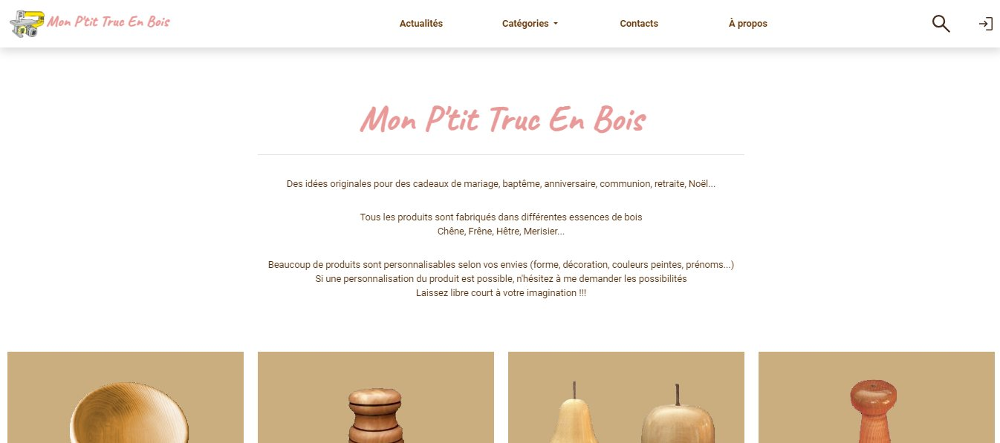
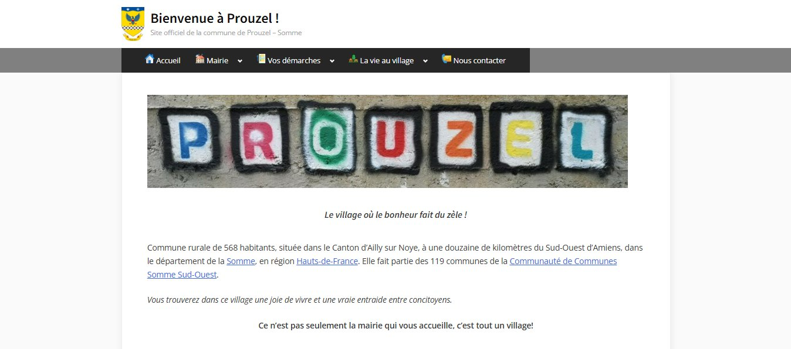
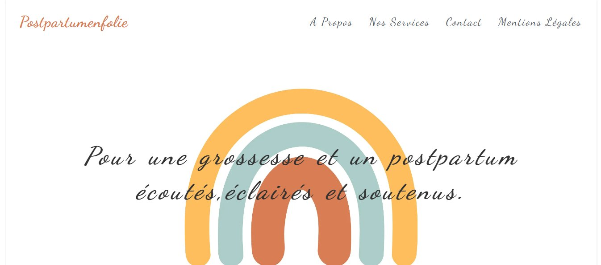

FERRARIO Loïc
Développeur Web / Web Mobile
A propos de moi
Passionné d'informatique, j'ai développé une expertise en tant que technicien support et
développeur Web, ce qui me permet d'intervenir sur des problématiques variées. Autonome et
curieux, je maîtrise le diagnostic, la réparation, ainsi que la gestion et l'optimisation de
sites et d'outils techniques
Mon parcours m'a permis de renforcer mes compétences en dépannage informatique, assemblage et
maintenance de systèmes, tout en travaillant avec des technologies telles que HTML, CSS, et PHP.
J'apprécie particulièrement de pouvoir apporter des solutions rapides et efficaces aux
utilisateurs
Aujourd'hui, je recherche un poste de Développeur Web pour mettre à profit mon
savoir-faire et mon sens du service, et contribuer activement à la satisfaction et au soutien
technique des utilisateurs
Parcours professionnel
2024
|
2012
Technicien SAV en Téléphonie Mobile /
Responsable E-learning
Save Store,
Amiens
Responsable E-learning (2017-2024)
Développement et lancement de la
plateforme
E-learning de la société Save
Création et gestion des modules de formation en ligne
Conception et mise en ligne des supports pédagogiques (tutoriels photos et vidéos)
Accompagnement et support technique des apprenants
Maintien et optimisation des fonctionnalités de la plateforme
Création et gestion des modules de formation en ligne
Conception et mise en ligne des supports pédagogiques (tutoriels photos et vidéos)
Accompagnement et support technique des apprenants
Maintien et optimisation des fonctionnalités de la plateforme
Technicien SAV en téléphonie mobile (2012-2024)
Accueil et prise en
charge
de la clientèle
Réparations de smartphones, tablettes, accessoires (agréments Samsung, Huawei, Xiaomi, Apple)
Vente d'accessoires et de services à la clientèle
Gestion du parc informatique de la boutique (modem, routeur, ordinateurs, imprimantes, )
Réparations de smartphones, tablettes, accessoires (agréments Samsung, Huawei, Xiaomi, Apple)
Vente d'accessoires et de services à la clientèle
Gestion du parc informatique de la boutique (modem, routeur, ordinateurs, imprimantes, )
2012
|
2011
Responsable SAV en Informatique
XXB
Consulting,
Perpignan
Accueil et prise en
charge
de la clientèle
Commandes, montages, paramétrages d'ordinateurs fixes et portables
Installation, mises à jour et paramétrages du système d'exploitation et des logiciels métiers
Nettoyage physique, désinfection, optimisation
Formation des utilisateurs à la sécurité informatique et aux règles de bonnes pratiques
Gestion et dépannage des installations sur site ou à distance
Création de supports de dépannage, restauration, sauvegarde
Installation, paramétrage d'équipements (modem, routeur, imprimantes...)
Commandes, montages, paramétrages d'ordinateurs fixes et portables
Installation, mises à jour et paramétrages du système d'exploitation et des logiciels métiers
Nettoyage physique, désinfection, optimisation
Formation des utilisateurs à la sécurité informatique et aux règles de bonnes pratiques
Gestion et dépannage des installations sur site ou à distance
Création de supports de dépannage, restauration, sauvegarde
Installation, paramétrage d'équipements (modem, routeur, imprimantes...)
Formations
2022
Développeur
Web /
Web Mobile
La Manu,
Amiens
Bac+2, RNCP 31114
(niveau
5)
Perfectionnement en HTML,
CSS, JavaScript, PHP, Bootstrap
Conception d’interfaces et de maquettes
Création de site web interactifs et responsive
Approche de Symfony et de Wordpress
Conception d’interfaces et de maquettes
Création de site web interactifs et responsive
Approche de Symfony et de Wordpress
2002
Baccalauréat Science et Techniques
de Laboratoire
Sainte Marie
de
Nevers,
Toulouse
Spécialité
Biochimie Génie
Biologique
Compétences techniques
Relation clientèle : Accueil et prise en charge de la
clientèle
Support technique (Niveau 1 & 2) : Diagnostic et
résolution de problèmes techniques pour
les utilisateurs
Connaissances en systèmes d'exploitations : Windows,
MacOS, Linux, Android, iOS
Résolution de problèmes réseaux : Configuration et
dépannage des réseaux (LAN, WAN,
Wi-Fi)
Connaissance des outils de bureautique : Suite
Microsoft Office, Google Workspace.
Gestion des périphériques : Imprimantes, scanners,
téléphones fixes et mobiles, tablettes...
Connaissances en sécurité informatique : Protection des
données, gestion des antivirus
et des pare-feux.
Formation des utilisateurs : Accompagnement dans
l’utilisation des outils
technologiques
et des logiciels.
Bases en développement web : HTML, CSS, JavaScript,
PHP, Bootstrap (utile
pour
comprendre et résoudre des problèmes sur les plateformes web).
Suivi et maintenance des logiciels : Installation,
configuration, et mise à jour des
logiciels.
Outils collaboratifs : Connaissance de plateformes
comme Slack, Trello, etc.
Support à distance : Utilisation d’outils comme
TeamViewer, Chrome Remote Desktop pour le dépannage à
distance.
E-learning : Expérience dans la création et la gestion
de formations en ligne
Soft Skills
Excellente communication : Capacité à expliquer des
concepts techniques de manière simple
Patience et pédagogie : Savoir gérer les utilisateurs
en difficulté et les accompagner calmement
Résolution de problèmes : Capacité à analyser
rapidement une situation et à proposer des solutions efficaces.
Gestion du stress : Capacité à rester calme face aux
urgences ou à la pression des utilisateurs
Travail en équipe : Collaboration avec d'autres
services (développement, réseaux, etc.).
Sens du service : Orientation client et volonté de
résoudre les problèmes efficacement.
Curiosité technique : Volonté d’apprendre de nouvelles
technologies et de se tenir à jour
Autonomie : Capacité à s'organiser seul selon les
taches demandées
Réalisations



Mairie
de
Prouzel
Création du site de la mairie de Prouzel
en partenariat avec Somme Numérique
en partenariat avec Somme Numérique

Postpartum En Folie
Création du site de présentation de l'activité de Mme Marina MAKHLOUFI

Langues
Français (langue maternelle)
Anglais (courant)
Espagnol (courant)
italien (bases)
Centres d'intérêt
Dessin
Bricolage
Lecture
Photographie